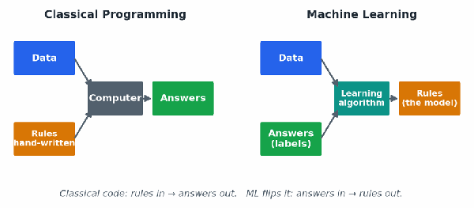
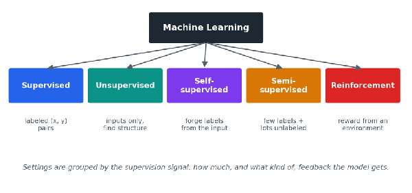
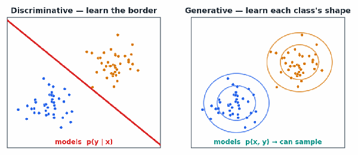
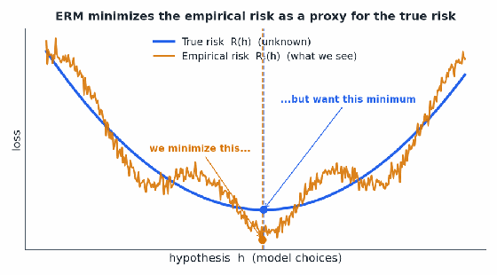
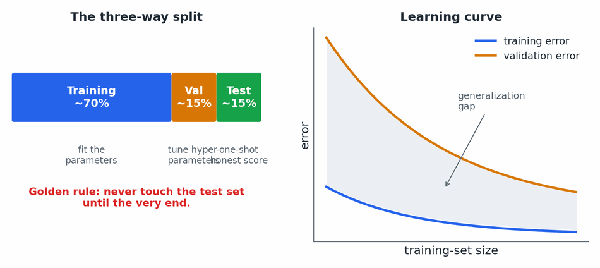
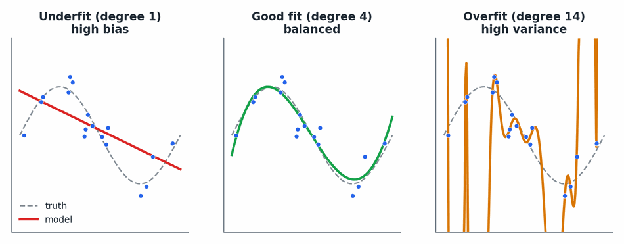
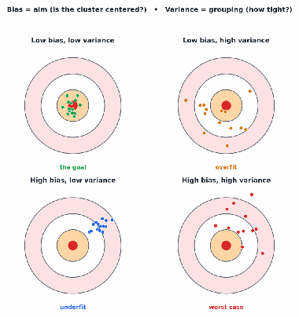
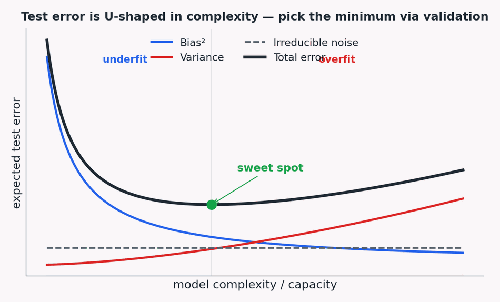
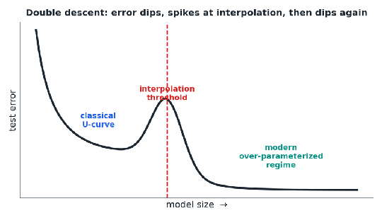
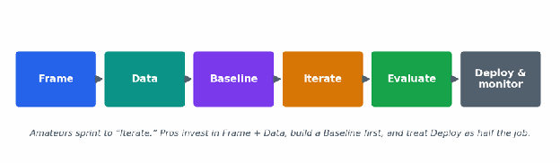

Fundamentals
Foundations: the learning problem. Simplified & illustrated edition.
This is the bedrock the rest stands on. We answer four questions: what machine learning actually is, how supervised learning is set up as an optimization problem, why held-out data is sacred, and what the bias-variance tradeoff really means. Nail these and most "fundamentals round" questions become a handful of ideas you apply, not facts you memorize.
#What Machine Learning Is
Classical software is rules in, answers out: a human writes the logic, the computer applies it. Machine learning flips the second half: answers in, rules out. You hand it worked examples and it reverse-engineers an approximate procedure.

Classical code applies rules you wrote; ML infers the rules from examples.
Why bother? For a huge class of problems nobody can write the rules by hand: telling a cat from a dog in pixels, predicting loan default, translating English to Japanese. The rules exist in human intuition but are too tangled to articulate. ML recovers an approximation of them from data.
One subtlety to carry through: ML never learns the true rule. It learns a function that fits the data you showed it and, hopefully, behaves well on data you haven't. That gap between "fits what I saw" and "works on what I haven't seen" is the single most important theme in the field. Regularization, validation, and the bias-variance tradeoff are all machinery for managing it.
#The five learning settings
Learning problems are grouped by what kind of supervision signal the algorithm gets — how much, and what kind of, labeled feedback is available.

The map of learning settings, organized by supervision signal.
| Setting | Supervision signal | Goal | Examples |
|---|---|---|---|
| Supervised | Labeled pairs | Learn a mapping that generalizes | Spam detection, credit scoring, demand forecasting |
| Unsupervised | Inputs only, no labels | Find structure in the data | Clustering, PCA/UMAP, density estimation |
| Self-supervised | Labels forged from the input itself | Pretrain rich representations | BERT (mask a word), GPT (next token), contrastive image learning |
| Semi-supervised | Few labels + lots of unlabeled data | Spread few labels over data structure | Pseudo-labeling, label propagation |
| Reinforcement | Reward from an environment | Learn a policy maximizing cumulative reward | AlphaGo, robotics, RLHF |
#Discriminative vs generative models
A second axis, orthogonal to supervision, cuts across how a model represents the problem. People fumble this one constantly.

Discriminative models draw the border; generative models learn each class's shape and derive the border.
| Discriminative | Generative | |
|---|---|---|
| Learns | — or just a decision boundary | — the full data story |
| Answers | "Which side of the line is this?" | "How is each class generated?" then applies Bayes' rule |
| Can it sample? | No | Yes — can generate new , detect outliers, handle missing features |
| Examples | Logistic regression, SVM, random forest, most NN classifiers | Naive Bayes, GMM, HMM, VAE, diffusion, autoregressive LLMs |
| Wins when | You only need the label and have ample data | Small data (assumptions hold), or you need to sample |
#The Supervised Setup, Formally
The formalism is exactly what separates a crisp answer from hand-waving. Supervised learning has six objects:
| Object | What it is | Example |
|---|---|---|
| Input space | The set of possible inputs | Feature vectors, images, sentences |
| Output space | The set of possible labels | for binary, for regression |
| Distribution | Unknown source of all data; we only see samples | "The real world" we never observe directly |
| Training set | examples drawn i.i.d. from | Your labeled dataset |
| Hypothesis space | Functions you're willing to consider | Linear models? Depth-3 trees? A given NN? |
| Loss | How wrong a single prediction is | Squared loss, 0-1 loss, cross-entropy |
The goal: use to pick an that performs well on the whole distribution , not just on .
#True risk vs empirical risk
What we actually care about is the true risk — the average loss over the entire distribution, for a fresh example drawn from the real world. The problem is fatal: we cannot compute it, because we don't have , only the finite sample .
So we approximate it with the only data we have — the average loss on the training set. This is the empirical risk:
By the law of large numbers, for a fixed it converges to the true risk as grows. It's the visible shadow cast by the invisible true risk.
| True risk | Empirical risk | |
|---|---|---|
| Defined over | The whole distribution | The finite training sample |
| Can we compute it? | No — is unknown | Yes — it's just an average |
| Role | What we want to minimize | The proxy we actually minimize |
| Catch | Invisible | Unbiased but noisy for a fixed ; optimistically biased for the picked by minimizing it |
#Empirical Risk Minimization (ERM)
Since we can't minimize the true risk directly, we minimize the empirical risk instead. That principle is Empirical Risk Minimization: pick the hypothesis with the smallest average error on your training data. Almost every model you've trained does a version of this — linear regression minimizes squared loss, logistic regression minimizes log-loss, a neural net minimizes cross-entropy via SGD.

ERM minimizes the wiggly empirical risk, but the minimum we actually want belongs to the smooth true risk.
Here's the crucial gap: ERM minimizes , but we want to minimize , and the minimizer of one isn't the minimizer of the other. When is rich and is small, can hit zero (perfect training fit) while stays large. That is overfitting, and it's why naive ERM on an unconstrained fails. Managing this gap is the entire game.
#Generalization: Why Held-Out Data Is Sacred
Generalization is performance on data the model wasn't trained on. It's the only thing that matters: a model that memorizes its training set and fails on everything else is worthless. This section is about measuring it honestly — mostly a matter of discipline.
#The i.i.d. assumption
The license to even hope for generalization is the assumption that training and future data are drawn i.i.d. from the same distribution . Identically distributed: test data looks statistically like training data. Independent: examples don't leak information about each other. When this breaks — the world shifts after you train, the test set comes from a different population, a time series is autocorrelated — generalization estimates turn optimistic and models silently degrade. Distribution shift is the number-one reason good offline models disappoint in production.
#The train / validation / test split
Because training error is an optimistically biased estimate of true risk, we estimate generalization on data the model never saw while fitting. Standard practice splits three ways.

Three-way split (left) and the learning curve whose gap diagnoses bias vs variance (right).
| Split | Typical % | What it's for |
|---|---|---|
| Training | ~60–80% | Fit the parameters (weights). The model directly minimizes loss here. |
| Validation | ~10–20% | Tune hyperparameters and make model decisions: architecture, regularization, when to stop, which features. |
| Test | ~10–20% | Used once, at the very end, for an honest unbiased estimate of real-world performance. |
Why do we need both validation and test? Every time you use the validation score to make a decision, you fit it a little. After trying a hundred configurations and keeping the best, the winner's validation score is optimistic — you've partly overfit the validation set through selection. The untouched test set restores honesty.
Violating this is called data snooping (or leakage). It's insidious: it inflates your reported metrics while the model is secretly worse. The classic traps:
| Leakage type | What goes wrong | Fix |
|---|---|---|
| Preprocessing on full data | Normalization stats / imputation / feature ranks computed before the split leak test info into training | Fit every transform on the training fold only, then apply |
| Target leakage | A feature is a proxy for or downstream of the label (e.g. "account closed date" for churn) | Drop features unknown at prediction time |
| Temporal leakage | Random shuffling trains on the future to predict the past | Always split by time for temporal problems |
| Group leakage | Same patient/user/doc in both train and test; model memorizes the entity | Split by group |
#Reading a learning curve
A learning curve plots error against training-set size (or epochs). It's a cheap diagnostic. As you add data, training error rises slightly and validation error falls; the two converge, and the vertical gap between them is the generalization gap.
| What you see | What it means → the fix |
|---|---|
| Big gap that doesn't close with more data | High variance / overfitting → more data, more regularization, or a simpler model |
| Both curves plateau high and sit close together | High bias / underfitting → a more expressive model or better features (more data won't help) |
#Overfitting, Underfitting & the Bias-Variance Tradeoff
Underfitting: the model is too simple to capture the pattern — high error on both train and test. Overfitting: the model is so flexible it captures noise as if it were signal — low train error, high test error. The art of ML is steering between the two.

The same 18 noisy points fit by polynomials of degree 1, 4, and 14. Note the overfit model has the lowest training error and the worst test error.
Model capacity (complexity) is the knob: polynomial degree, tree depth, number of NN parameters, the inverse of regularization strength. Low capacity → underfit; high capacity → overfit; the right spot depends on how much data you have (more data supports more capacity).
#The bias-variance decomposition
For squared-error regression the tradeoff is exact. If data is with zero-mean noise of variance , then the expected error at a point, averaged over all training sets you might draw, splits cleanly:
| Term | Plain English | Signals |
|---|---|---|
| Bias² | How far the average prediction sits from the truth — systematic error in the same direction | Model too simple |
| Variance | How much the prediction jumps around as you swap training sets | Model too flexible, chasing noise |
| (noise) | The floor — the label is partly random; no model beats it | Irreducible |
The tension: simplifying lowers variance but raises bias; enriching lowers bias but raises variance. You can't drive both to zero with finite data — push one down and the other comes up. Total error is their sum, so you minimize by trading off.
#The dartboard picture
The most durable mental image: throwing darts at a target. The bullseye is the truth; each dart is a prediction from a model trained on one random dataset.

Bias is aim (is the cluster centered?); variance is grouping (how tight is it?).
#The U-curve
Plot expected test error against complexity and you get the famous U. As complexity rises, bias² falls steeply but variance climbs; their sum plus the noise floor is U-shaped. The minimum is the optimal capacity for your data.

Bias falls and variance rises with complexity; total error bottoms out at the sweet spot.
Training error (not shown) keeps falling monotonically to the right — which is exactly why you can't pick complexity by training error. You pick it by validation error, which traces this U.
| To reduce VARIANCE (overfitting) | To reduce BIAS (underfitting) |
|---|---|
| More data | A richer / more expressive model |
| Bagging / ensembling (averages variance away) | Boosting (fits the residual error) |
| Regularization (trades a little bias for a lot of variance) | Better features / less regularization |
#Double descent — the modern asterisk
The clean U is the classical story, and mostly right. But in modern deep learning, as you grow a model past the point where it can perfectly fit (interpolate) the training data, test error often goes down again after a spike at the interpolation threshold.

Double descent: error dips, spikes where the model exactly fits the data, then dips a second time.
This is why a neural net with far more parameters than data points can still generalize beautifully. The leading explanation: among the many settings that perfectly fit the data, gradient descent has an implicit bias toward simple, low-norm solutions — so huge models effectively self-regularize.
#Regularization, Inductive Bias & No Free Lunch
Three tightly linked ideas explain why and how we deliberately constrain models.
| Idea | What it means |
|---|---|
| Regularization | Any change to learning that reduces variance/overfitting, usually by penalizing complexity. Minimize instead of alone, where measures complexity ( ridge, lasso) and sets the strength. It trades a little bias for a larger drop in variance — sliding you left toward the U-curve's sweet spot. Early stopping, dropout, weight decay, data augmentation, and ensembling are all regularizers in spirit. |
| Inductive bias | The assumptions a model uses to generalize beyond the data. Every model that generalizes has one. A linear model assumes linearity; a CNN assumes locality and translation invariance; an RNN/Transformer assumes sequence structure; a tree assumes axis-aligned splits. It's not a flaw — it's what lets a model prefer one of the infinitely many functions consistent with finite data. |
| No Free Lunch | Averaged over all possible problems, no learner beats any other. Any algorithm that excels on one class of problems must do correspondingly worse on another. There is no universally best model — so your job is to match the model's inductive bias to your problem's structure. |
#Method Taxonomies to Speak Fluently
A few orthogonal axes for classifying methods come up constantly. Speaking them fluently signals breadth.
| Axis | Option A | Option B |
|---|---|---|
| Parametric vs nonparametric | Parametric: fixed #params regardless of data size; can discard the data (linear/logistic regression, a fixed NN). Strong assumptions, fast, data-efficient, can underfit. | Nonparametric: effective #params grows with data (kNN, kernels, trees, GPs). Flexible, fewer assumptions, data/compute hungry, can overfit. ( zero parameters.) |
| Batch vs online | Batch/offline: train on all data at once, deploy a fixed model. Mini-batch SGD is still batch — an optimization detail, not online. | Online: update incrementally per example/mini-batch. Suits streaming and non-stationary data; adapts to drift but can be unstable. |
| Problem framing | Classification (discrete label; accuracy, AUC), Regression (continuous; MSE, MAE, ) | Ranking (relative order; NDCG, MAP, MRR), Generation (structured output; perplexity, human eval) |
The same business problem can often be framed multiple ways, and choosing the framing is itself a modeling decision. "Recommend items" can be classification (click / no-click), regression (predict rating), or ranking — and the ranking framing usually matches the real objective best.
| Axis | Option A | Option B | Pick A when… |
|---|---|---|---|
| Params | Parametric (linreg, fixed NN) | Nonparametric (kNN, trees, GP) | Limited data, a structural prior, need speed/small footprint |
| Training | Batch / offline | Online / incremental | Data is static, fits in memory, no drift (B for streaming) |
| Output | Classification / Regression | Ranking / Generation | Answer is one discrete/continuous target (ranking when order is the goal) |
| Model | Discriminative | Generative | You only need the label and have ample data (generative to sample / small data) |
#The End-to-End ML Workflow
Interviews increasingly test whether you can operate, not just recite algorithms. The lifecycle is the same everywhere, and narrating it crisply is its own skill.

The ML lifecycle. The amateur sprints to "Iterate"; the pro invests in Frame and Data.
| Stage | What happens (and where people slip) |
|---|---|
| 1. Frame | Turn a vague business goal into a precise ML problem. Highest-leverage and most-skipped step. |
| 2. Data | Collect, clean, label, understand; build features; set up the split (respecting time/groups). Most time goes here; most failures originate here. |
| 3. Baseline | Build the dumbest reasonable model first (majority class, a linear model, a heuristic). It calibrates expectations and exposes leakage. Skipping it is a classic junior mistake. |
| 4. Iterate | Improve via features, models, tuning — one change at a time. Use the validation set. Diagnose with learning curves to know which lever to pull. |
| 5. Evaluate | Measure against the business-aligned metric on held-out data, with error analysis by slice. Touch the test set once, here. |
| 6. Deploy & monitor | Ship it, then watch for distribution shift, drift, latency, degradation. Production is where i.i.d. assumptions go to die. Plan retraining. |
#Turning a vague problem into a crisp one: I-O-L-M
This separates levels in interviews. "We want to reduce customer churn — how would you use ML?" The wrong move is naming algorithms. The right move is defining the ML problem by pinning down four things.
| Question to answer | Churn example | |
|---|---|---|
| I — Input | What features exist at prediction time? (A feature known only after the event is leakage.) | Usage frequency, tenure, support tickets, plan type, recent activity trend |
| O — Output | What exactly are you predicting, in what form, over what horizon? | "Probability an active subscriber cancels within the next 30 days" → calibrated classification |
| L — Label source | Where does ground truth come from? Is it reliable, available, unbiased? | "Did this customer cancel in the 30-day window?" — from historical billing logs |
| M — Metric | How is success measured, tied to business value? | Precision/recall or AUC offline; retained revenue from interventions online |
Nail those four and the modeling almost chooses itself. Get them wrong and the fanciest model is solving the wrong problem. Note that accuracy is misleading for rare events — churn is rare, so "nobody churns" scores high and is useless — so always separate the offline ML metric from the online business metric you'll A/B test.
#One-Page Summary
| Concept | The one thing to remember |
|---|---|
| What ML is | Inferring rules from examples; the real goal is generalization, not training fit. |
| Five settings | By supervision signal: supervised, unsupervised, self-supervised, semi-supervised, reinforcement. |
| Disc vs gen | Discriminative draws the border ; generative paints the countries and can sample. |
| Supervised setup | , , distribution , i.i.d. sample , hypothesis space , loss . |
| Risk | True risk is wanted but unknowable; empirical risk is the proxy ERM minimizes. |
| i.i.d. | Same distribution + independent samples licenses generalization; distribution shift breaks it. |
| Split | Train fits parameters, validation tunes choices, test is the one-shot honest estimate. |
| Golden rule | Never touch the test set until the end. Watch for data leakage. |
| Over/underfit | Underfit = high train+test (bias). Overfit = low train, high test (variance). |
| Bias-variance | Squared error Bias² + Variance + . Bias = aim, variance = grouping. Pick the U-curve min via validation. |
| Double descent | Overparameterized nets can improve again past the interpolation threshold. |
| Reg / bias / NFL | Regularization trades bias for less variance; inductive bias enables generalization; no universally best learner. |
| Taxonomies | Parametric vs nonparametric; batch vs online; classification/regression/ranking/generation. |
| Workflow + framing | Frame → Data → Baseline → Iterate → Evaluate → Deploy. Crispen with I-O-L-M, frame before you model. |